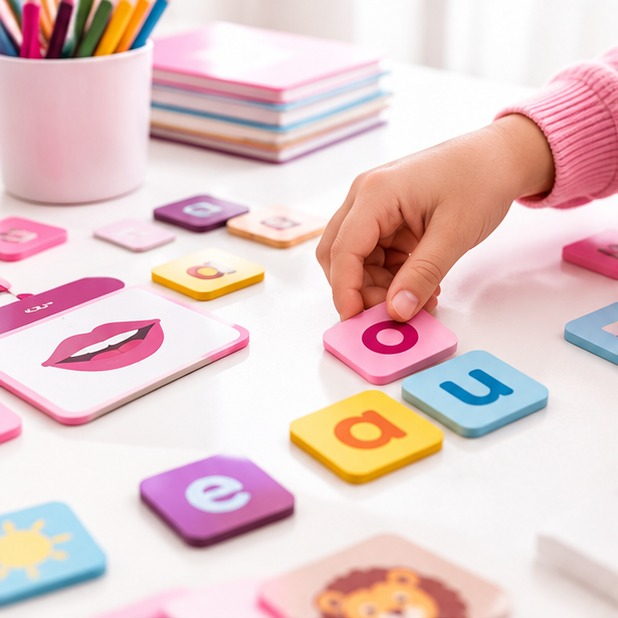

Learn English • Build Your Future
أهلًا بكم
أنا ميس دعاء البحراوي
مدرسة لغة إنجليزية
أساعد الأطفال على بناء أساس قوي في اللغة الإنجليزية من خلال التعلم الممتع والتدريب العملي المناسب لكل مرحلة.
Helping young learners build confidence in English through engaging lessons and practical activities.
English made easier, one step at a time.
About Me
نبذة عني
أهتم بتقديم تجربة تعلم واضحة ومشجعة تساعد الطفل على اكتساب مهارات اللغة الإنجليزية خطوة بخطوة.
I focus on clear, encouraging lessons that help children develop their English skills step by step.
Educational Services
خدماتي التعليمية
اختاري الخدمة المناسبة لاحتياجات طفلك.

A↗
التأسيس الصوتي (Phonics)
نبدأ مع الطفل من صوت الحرف، ثم نربط الصوت بشكله ونتمرّن على دمج الأصوات لقراءة الكلمات الأولى.
Build letter-sound awareness, blending skills, pronunciation and confidence in early reading.
ماذا يتعلّم الطفل؟
- أصوات الحروف وتمييزها.
- دمج الأصوات لتكوين كلمات قصيرة.
- تدريبات نطق وقراءة مناسبة للمستوى.
▤
شرح مناهج الابتدائي
شرح الدروس ومراجعة المفردات والتراكيب، مع حل تدريبات تساعد الطفل على الاستعداد للواجبات والاختبارات.
Understand school lessons, key vocabulary and exercises through clear, step-by-step explanations.
تشمل الخدمة
- شرح الدرس بطريقة مبسطة.
- مراجعة الكلمات والتراكيب.
- التدريب على أسئلة وتطبيقات مشابهة.
Aa
قواعد اللغة (Grammar)
نفهم القاعدة من خلال أمثلة قريبة من الطفل، ثم نطبّقها في جمل وتمارين قصيرة بدل الحفظ فقط.
Learn grammar with child-friendly examples, guided practice and short activities that reinforce understanding.
طريقة التعلّم
- شرح القاعدة ومتى نستخدمها.
- أمثلة محلولة خطوة بخطوة.
- تدريبات لتكوين جمل صحيحة.
◎
مجموعات تعليمية
تعلّم في مجموعة صغيرة يشجّع المشاركة والتدريب والمتابعة، وفق المستوى والمواعيد المتاحة.
Small-group learning encourages participation, practice and progress tracking based on level and schedule.
مميزات المجموعة
- أنشطة ومشاركة بين الطلاب.
- تدريب ومراجعة مستمرة.
- اختيار المستوى والموعد بعد الاستفسار.
Why Learn With Me?
لماذا تختارون ميس دعاء؟
تعلم خطوة بخطوة
مراعاة مستوى الطفل واحتياجاته التعليمية.
شرح مبسط وتفاعلي
تقديم المفاهيم من خلال أمثلة وتدريبات عملية.
تركيز على المهارات الأساسية
القراءة والنطق والمفردات والقواعد حسب المرحلة.
تواصل قبل الحجز
اسأل عن المستوى والمواعيد والخدمات المتاحة.
Our Location
مكان الدراسة
أكاديمية طفل المستقبل
أعلى موبيليات كتانة – الدور الأول
Call to Action
ابدأ رحلة طفلك مع اللغة الإنجليزية!
للاستفسار عن المواعيد والمجموعات والأسعار، تواصل معنا عبر واتساب.
Let's make learning English a positive experience.
012 7194 1596
Share Profile